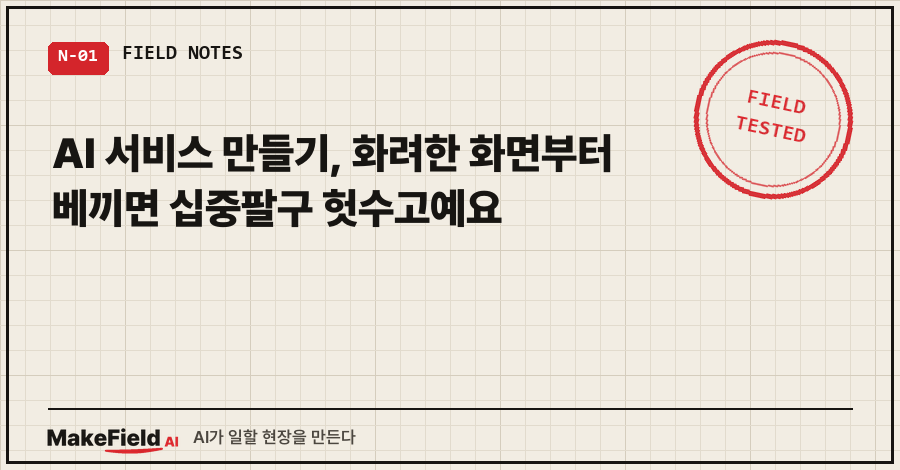
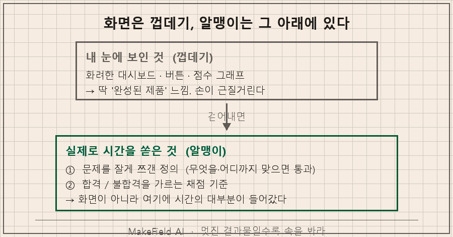
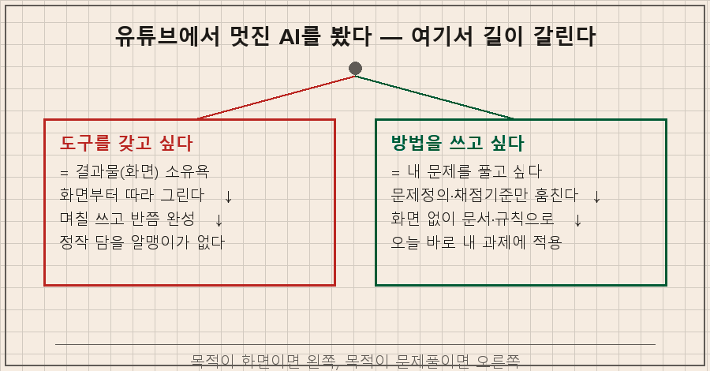

먼저 결론부터 말할게요.
AI 서비스 만들기를 시작할 때, 유튜브에서 본 화려한 화면부터 따라 그리면 대개 시간을 버려요.
그 멋진 화면은 껍데기고, 진짜 훔쳐야 할 건 그 뒤에 숨은 방법이거든요.
저는 이걸 며칠 헤매고 나서야 알았어요. 손이 먼저 나갔다가 크게 돌아온 이야기예요.
제조 현장에서 15년간 제어 설비를 만들어 온 엔지니어예요.
수소 설비 판넬 설계하고, PLC 로직 짜고, 현장 나가 결선 확인하는 게 주업이고요.
요즘은 그 일 상당 부분에 AI를 붙여 씁니다.
1. 유튜브에서 그 영상을 보고 손이 근질거렸어요
어느 날 밤에 화면 하나에 꽂혔어요.
AI가 일을 제대로 했는지 옆에서 감시하고, 잘했는지 못했는지 점수까지 매겨주는 플랫폼 영상이었어요.
버튼이며 그래프며 대시보드가 어찌나 그럴듯하던지, 딱 "완성된 제품" 느낌이었죠.
마침 저는 회사에서 까다로운 원가 추정 과제를 하나 맡고 있었어요.
답이 딱 떨어지지 않고, 여러 가정을 놓고 이게 맞나 저게 맞나 계속 저울질해야 하는 일이요.
영상 속 그 화면을 보자마자 생각했어요.
"저걸 만들어서 내 과제에 붙이면, AI가 뽑은 추정치를 자동으로 채점하고 검증해주겠는데?"
그날 저는 거의 만들 뻔했어요.
화면 레이아웃부터 머릿속에 그리고 있었거든요. 이게 바로 함정의 시작이었습니다.
2. 만들려고 뜯어보니, 화면은 껍데기더라고요
다행히 바로 손대진 않고, AI랑 같이 그 영상을 통째로 뜯어봤어요.
"이 사람이 실제로 만든 게 뭐냐, 어디에 제일 공을 들였냐"를 물으면서요.
그랬더니 좀 허무한 답이 나왔어요.
제 눈을 사로잡았던 그 화면, 버튼, 그래프.. 그건 맨 마지막에 얹은 얇은 껍데기였어요.
그 사람이 시간을 쏟아부은 곳은 화면이 전혀 아니었거든요.

생각해보면 당연했어요.
설비도 그렇잖아요. 번쩍이는 HMI 터치스크린은 마지막에 그리는 거고,
진짜 어려운 건 그 밑에서 도는 제어 로직과 인터록 설계예요.
화면만 예쁘게 베낀 판넬은 버튼을 눌러도 아무 일도 안 일어나죠.
3. 진짜 판 건 '문제를 어떻게 정의했나'였어요
껍데기를 걷어내니 알맹이가 두 개 남았어요.
하나는 문제 정의였어요.
"AI가 잘했는지 판단한다"는 두루뭉술한 말을, "무엇을, 어떤 기준으로, 어디까지 맞으면 통과"인지로 아주 잘게 쪼개 놓은 거예요.
다른 하나는 채점 기준이었어요.
사람이 매번 눈으로 보지 않아도 되게, 합격·불합격을 가르는 잣대를 미리 문장으로 박아둔 거죠.
[내가 베끼려던 것 vs 실제로 훔쳐야 했던 것]
베끼려던 것 : 대시보드 화면 · 버튼 · 점수 그래프 → 껍데기
훔쳤어야 할 것 : ① 문제를 잘게 쪼갠 정의
② 합격/불합격을 가르는 채점 기준 → 알맹이
껍데기부터 지으면 → "만드는 법"은 배워도 "왜 되는지"는 못 배움여기서 뒤통수를 맞았어요.
만약 제가 화면부터 만들었으면, 그 영상이 준 진짜 교훈을 정반대로 실천할 뻔한 거예요.
그 사람이 "화면 말고 문제정의에 시간을 쏟아라"라고 온몸으로 보여줬는데,
저는 그걸 보고 "오, 화면 멋지다, 화면부터 만들자"로 알아들었던 거니까요.
4. 그래서 질문을 바꿨어요
그 뒤로 AI 서비스 만들기에 손이 근질거릴 때마다, 저는 저한테 이걸 먼저 물어요.
"나 지금 저 도구를 갖고 싶은 거야, 아니면 저 방법을 쓰고 싶은 거야?"
이 둘은 완전히 다른 욕구예요.
도구를 갖고 싶은 건 소유욕에 가까워요. 내 화면, 내 대시보드, 남한테 보여줄 결과물이요.
방법을 쓰고 싶은 건 문제를 풀고 싶은 거고요.
제 진짜 목적은 원가 추정 과제를 잘 끝내는 거였지, 대시보드를 갖는 게 아니었어요.
그래서 화면은 한 줄도 안 만들었어요.
대신 그 영상에서 뽑아낸 방법 두 개, 그러니까 문제를 잘게 쪼개는 법과 채점 기준을 세우는 법만 가져다가,
제 원가 추정 과정에 그대로 적용했어요. 화면 없이, 그냥 문서와 규칙으로요.

| 물어볼 것 | 도구를 갖고 싶다 | 방법을 쓰고 싶다 |
|---|---|---|
| 목적 | 결과물(화면) 소유 | 문제 해결 |
| 먼저 하는 일 | 화면부터 따라 그림 | 문제정의·채점기준 추출 |
| 결과 | 반쯤 만들다 지침 | 오늘 바로 써먹음 |
자주 묻는 질문
Q. 그래도 눈에 보이는 화면이 있어야 팀에 보여주고 설득하죠?
맞아요, 보여줄 물건이 필요한 순간은 분명 있어요. 근데 순서가 중요해요. 방법으로 먼저 문제가 풀리는 걸 확인한 다음에 화면을 얹으면, 그 화면은 진짜 알맹이를 담는 그릇이 돼요. 반대로 화면부터 만들면, 정작 안에 담을 알맹이가 없어서 빈 껍데기를 붙들고 있게 되더라고요. 저는 "먼저 풀고, 필요하면 나중에 보여준다"로 순서를 고정했어요.
Q. 영상만 보고 그 안의 방법을 어떻게 뽑아내나요?
저는 영상을 통째로 AI한테 먹였어요. 화면 설명 말고 "이 사람이 시간을 어디에 쏟았고, 핵심 판단이 뭐였는지"를 캐물었죠. 소비하듯 한 번 보고 넘기면 화면만 남는데, 이렇게 역설계하듯 뜯으면 방법이 남아요. 영상 한 편을 소비가 아니라 자산으로 바꾸는 셈이에요.
돌아보면 제가 배운 건 그 플랫폼 만드는 기술이 아니었어요.
"멋진 걸 보면 그 겉이 아니라 속에서 뭘 했는지를 봐라"는 눈이었죠.
현장에서 남의 설비를 벤치마킹할 때도 똑같아요. 겉모양 베끼면 흉내고, 설계 의도를 읽으면 내 것이 돼요.
혹시 요즘 유튜브나 뉴스에서 멋진 AI를 보고 "나도 저거 만들래" 싶으셨다면, 딱 한 번만 자문해 보세요.
나는 저 화면을 갖고 싶은 걸까, 저 방법으로 내 문제를 풀고 싶은 걸까.
이렇게 만들다 돌아오고, 뜯어보고 훔친 기록들은 makefield.ai에 하나씩 남겨두고 있어요.
태그: #AI서비스만들기 #AI프로젝트시작 #AI따라만들기 #AI만들고싶을때 #AI데모 #AI자동화 #현장엔지니어 #제조업AI #빌드과잉 #AI실무 #AI프롬프트 #문제정의 #AI활용법 #엔지니어AI #MakeFieldAI